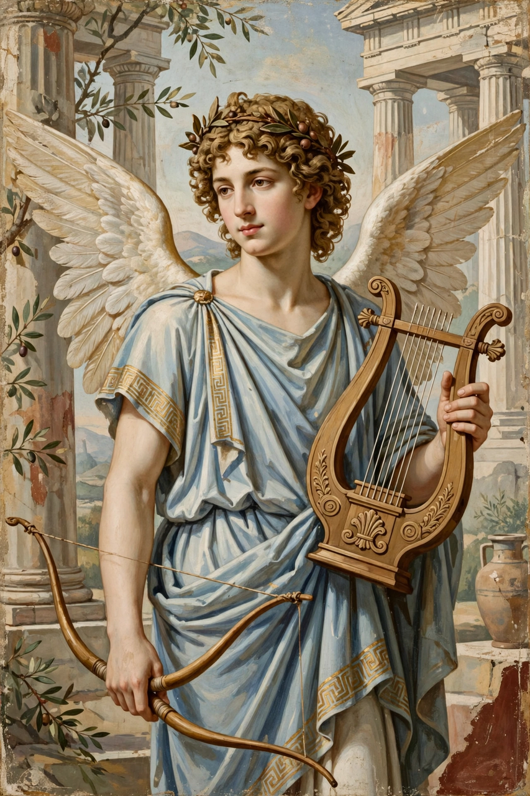

| Eros | |
|---|---|
 | |
| Abode | Mount Olympus |
| Symbol | Bow and arrows, lyre, hare |
| Parents | Primordial (self-born); later Ares and Aphrodite |
| Roman equivalent | Cupid |
In Greek mythology, Eros (Greek: Ἔρως, "Desire") is the god of love and sex. He appears in two very different guises. In early Greek poetry and art he is a primordial god, one of the first beings to emerge from Chaos, a cosmic force who "loosens the limbs and overpowers the mind". In later tradition he becomes the mischievous winged son and companion of Aphrodite, intervening in the loves of gods and mortals with his arrows.
Hesiod's Theogony (c. 700 BCE) ranks Eros among the first four beings, with Chaos, Gaia and Tartarus: "fairest among the deathless gods", the force that makes generation and union possible. The philosopher Parmenides likewise made Eros the first of the gods, and Plato's Symposium debates his nature at length, calling him the oldest, most honoured and most powerful of gods for acquiring virtue and blessedness.
From the classical period onward Eros was increasingly depicted as the child of Aphrodite (and, in many accounts, of Ares), transformed over centuries from a handsome youth into the plump winged toddler familiar from Hellenistic and Roman art — the Cupid of later tradition. His arrows came in two kinds: gold-tipped, kindling love, and lead-tipped, kindling aversion, as in the tale of Apollo and Daphne.
The most famous myth of Eros is his love for the mortal princess Psyche, told in full by Apuleius in The Golden Ass. Forbidden to look upon her nocturnal husband, Psyche raised a lamp and spilled hot oil on the god, who fled; after long wanderings and tasks set by Aphrodite — sorting grains, gathering golden wool, fetching water from the Styx and descending to the underworld — she was reunited with Eros and made immortal.